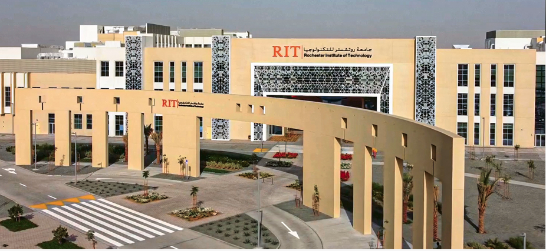

Ioannis Karamitsos, PhD, Director METARIT Center

About me
I am an
Assistant Professor at
Rochester Institute of Technology (RIT)-Dubai Campus since 2020 and Director of METARIT Research Center. Previously I spent over 30 years with a unique mix of academic research, industrial, and DOE lab RD experiences. I was worked within the private and public sectors and experienced within European, Middle East and Chinese companies.
From 2016 to 2020, Ioannis has joined the Department of Electrical Engineering as an Adjunct Professor at Rochester Institute of Technology Dubai. Ioannis is also a member of DSOA-Dubai Innovation Advisory Board and DTEC accelerator as a mentor.
His current research concerns Blockchain, Metaverse, AI, Generative AI, Large Language Models, Machine Learning, next generation cloud networks, Big Data and Analytics, Internet of Things (IoT), Software defined networks (SDN)telecommunication security systems and networks, post-quantum computing, cryptography and Smart Cities.
From 2010 to 2020, Ioannis was a Regional Digital Transformation Technologist- Blockchain Practice Lead at Orange Business Services in Dubai. As a blockchain practice lead, he collaborated with UAE public entities to conceptualize and implement blockchain and AI solutions, as well as defining a complete end-to-end digital enablement road-map.
He has conducted multiple digital innovation workshops, Artificial Intelligence, Machine and Deep Learning, Blockchain-smart contracts and POCs to identify digital disruption and associated business and technology transformation approaches. He was appointed as Head of Consultancy for developing smart services portfolio for Healthcare sector (smart hospital) in GCC. In addition, he was appointed as strategic advisor for developing the two smart cities in KSA, the Information Technology Complex (ITCC) and King Abdulaziz Financial Center (KAFD) and supported the strategy for developing a suite of smart city services.
As an avid learner, he also possesses executive certificates from Oxford Said Business School (Blockchain Strategy), MIT (Tackling the challenge of Big Data) and from Columbia Business School (Driving Strategic Impact Program).
Moreover, he is the author of a plethora of journal papers and book chapters; a member of IEEE since 1997, and he is serving as a reviewer in several engineering journals, and conferences.
Ioannis have several certifications such as: CBH, CISCO/CCNA Data Center, CEH v.9, ISO27002, PRINCE2, COBIT 5.0, IBM Certified Infrastructure Cloud Solution and IBM Cloud Computing Architecture, ITIL, TOGAF 9, and Scrum Master.
I obtained a PhD in Built Environment from
University of Salford UK, a Master Degree (MSc) from
University of Danube Krems Austria, and Bachelor Degree (Laurea) from
University of Rome "La Sapienza", Italy.
For more details download my
Curriculum Vitae
Education
2017 |
2020 |
PhD in Engineering Built Environment, University of Salford, UK |
2007 |
2013 |
PhD by Publication in Computer Science, University of Sunderland, UK |
2000 |
2003 |
MSc in Telematics Management, Universtiy of Krems, Danube, Austria |
1985 |
1991 |
Msc in Electronic Engineering (Laurea), University of Rome, "La Sapienza", Rome, Italy |
2019 |
2019 |
Executive Certificate "Artificial Intelligence: Implications for Business Strategy" MIT University, USA |
2018 |
2018 |
Executive Certificate "Blockchain Strategy Program" , Oxford Said Business School, Oxford, UK” |
2015 |
2015 |
Executive Certificate "Tackling the challenges of Big Data" MIT University,USA |
2013 |
2013 |
Executive Certificate in Driving Strategic Impact, Columbia Business School,USA |
Work Experience
Dec.2023 |
Now |
Academic-Director of METARIT Research Center at Rochester Institute of Technlogy-RIT- Dubai Campus, UAE |
Jan. 2021 |
Now |
Academic-Assistant Professor at Rochester Institute of Technlogy-RIT- Dubai Campus, UAE |
Oct. 2016 |
Dec 2020 |
Academic- Adjunct Professor at Rochester Institute of Technlogy-RIT- Dubai Campus, UAE |
Oct 2013 |
Dec 2020 |
Professional- Head of Consultancy Enterprise Infrastructure Lead -Orange Dubai,UAE |
Oct 2010 |
Sept 2013 |
Professional-Managing Consultant-Orange Dubai,UAE |
Feb 2007 |
Spet 2010 |
Professional-CTO OnTelecoms, Athens, Greece |
Jan 2005 |
Jan 2007 |
Professional-Business Development Director, Huawei, Greece |
Jan 1992 |
Dec 2004 |
Professional-Intracom Athens, Greece |
Teaching
The teaching activity has been mainly carried out in the Graduate Programs of Data Analytics. At undergraduate level, I have taught combinations in Security, Information Technology, Human Computer Interaction User Interface, Project Management and Advanced Networking courses.
At graduate level, I have taught combinations in Data Mining, AI, Cloud Computing,
Cryptography, Cryptocurrency and Blockchain.
| Spring 2025 |
ISTE 780- Data Driven Decision Making
PROF 740- Foundation of Data Analytics
PROF 741- Enterprise Infrastructure for Data Analytics |
Graduate- Data Analytics |
| Fall 2024 |
ISTE 780- Data Driven Decision Making
PROF 740- Foundation of Data Analytics
PROF 741- Enterprise Infrastructure for Data Analytics |
Graduate- Data Analytics |
| Spring 2024 |
ISTE 780- Data Driven Decision Making
PROF 740- Foundation of Data Analytics
PROF 741- Enterprise Infrastructure for Data Analytics |
Graduate- Data Analytics |
| Fall 2023 |
ISTE 780- Data Driven Decision Making
PROF 740- Foundation of Data Analytics
PROF 741- Enterprise Infrastructure for Data Analytics |
Graduate- Data Analytics |
| Spring 2023 |
ISTE 780- Data Driven Decision Making
PROF 740- Foundation of Data Analytics
PROF 741- Enterprise Infrastructure for Data Analytics |
Graduate- Data Analytics |
| Fall 2022 |
ISTE 780- Data Driven Decision Making
PROF 740- Foundation of Data Analytics
PROF 741- Enterprise Infrastructure for Data Analytics |
Graduate- Data Analytics |
| Spring 2022 |
ISTE 780- Data Driven Decision Making
PROF 740- Foundation of Data Analytics
PROF 741- Enterprise Infrastructure for Data Analytics |
Graduate- Data Analytics |
| Fall 2021 |
PROF 740- Foundation of Data Analytics
PROF 741- Enterprise Infrastructure for Data Analytics |
Graduate- Data Analytics |
| Spring 2021 |
ISTE 780- Data Driven Decision Making
PROF 705- Contexts and Trends
ISTE 605- Scholarship in Information Technology |
Graduate- Data Analytics |
| Fall 2020 |
PROF741- Enterprise Infrastructure for Data Analytics |
Gradaute-Data Analytics |
| Fall 2020 |
CSEC 102- Information Security |
Undergraduate Computer Security |
| Spring 2020 |
ISTE 780- Data Driven Decision Making
PROF 705- Contexts and Trends
PROF 741- Enterprise Infrastructure for Data Analytics |
Graduate- Data Analytics |
| Fall 2019 |
PROF799-Digital Transforamtion towards Smart City |
Graduate-Smart Cities |
| Spring 2019 |
PROF 740- Foundations of Data Analytics
ISTE 605- Scholarship in Information Technology |
Graduate- Data Analytics |
| Fall 2018 |
PROF 740- Foundations of Data Analytics
ISTE 605- Scholarship in Information Technology |
Graduate- Data Analytics |
| Fall 2018 |
PROF 740- Foundation of Data Analytics |
Graduate-Data Analytics |
| Fall 2018 |
ISTE605- Scholarship in Inforamtion Technology |
Gradaute-Data Analytics |
| Fall 2018 |
PROF799-Digital Transforamtion towards Smart City |
Graduate-Smart Cities |
| Fall 2018 |
NSSA602- Enterprise Computing |
Graduate Computer Security |
| Spring 2017 |
NSSA610- Advanced Wireline Network Technologies |
Graduate Computer Security |
| Spring 2017 |
NSSA370-Project Management |
Undergraduate Computer Security |
| Spring 2017 |
ISTE 340-Software Modeling Requirements |
Undergraduate Computer Information Technlogy |
| Fall 2017 |
CSCI 243- Mechanics of Programming |
Undergraduate Computer Information Technlogy |
| Fall 2017 |
ISTE 260- Designing the user experience |
Undergraduate Computer Information Technlogy |
Executive Training
| Dubai Police Academy |
DP Professional Diploma in Security Leadership and Innovation conducted a 4- day executive training for Law Enforcement Officers with topic: “New Emerging Technologies Convergence”. |
2025 |
| UAE Goverment Institutions |
Executive Training Chief AI Officer. |
2025 |
| Dubai Police Academy |
DP Professional Diploma in Security Leadership and Innovation conducted a 4- day executive training for Law Enforcement Officers with topic: “New Emerging Technologies Convergence”. |
2024 |
| Abu Dhabi Statistical Center |
Delivered an executive training for 2 months for Data Engineering stream. |
2023 |
| Dubai Police Academy |
Professional Diploma in Data Analytics-Public Safety and Security Concentration, delivered an executive training course of 60 hours. |
2023 |
| Ajman Goverment |
Executive training for 5 days “Digital Transformation Leader Professional Diploma. |
2022 |
Research
Personally, I am interested in applying Blockchain, Cryptography, Post-quantum, Machine learning, IIoT, and data mining techniques to emerging problems related to large-scale decentralized cyber-physical systems and critical infrastructures as well as energy, mining, health care and other domains of major economic and social impact.
I am interested in the theory, algorithms, modelling and systems in the intersection of data science concepts and computation.
My first research aim is understanding the theory, algorithms, modeling and practical aspects, and produce entire ML pipelines improving the various components of large systems and produce high quality in the intersection of data science concepts and computation.
The second research area is the Blockchain technology via the lens of smart contract and consensus protocols. In this area, I study the design and development of different platforms such as Ethereum and Hyperledger. I also design smart contract conceptual model for different industries. Finally, I will examine post quantum security mechanisms for the blockchain area.
The third research area is Deep learning networks (CNN, RNN, LSTM) design for image classification and object detection.
The fourth research area is Generative AI, NLP(NER) and Large Language Model(LLM)
The fifth research area is the Metaverse in different vertical industry sectors especially the shift of the smart cities (real estate) to Metacities.
I started new projects, on graph theory mining, on the generative adversarial networks (GANs), on Generative AI with Diffusion Models, on MLOps pipelines framework and the optimization of dynamic systems for Machine Learning.
Publications
A recent list of my publications can be found in:
Publications Yearly- Book Chapters
Journals-Peer Reviewed Conferences
Students who are co-authors in my publications and I mentored since joining RIT have their name undelined.
Notation: [B]=Book, [BC]=Book Chapter, [J]=Journal, [C]=Conference
2025
-
[C] Majumder, A., Gupta, S., Singh, D., Acharya, B., Gerogiannis, C.V., Kanavos, A., and Karamitsos.I (2024).
Enchanced Cardiovascualar Disease Predicition Through Semi-supervised Grey Ensemble Model
2024 IEEE International Conference onIn: Themistocleous, M., Bakas, N., Kokosalakis, G., Papadaki, M. (eds) Information Systems. EMCIS 2024.
Lecture Notes in Business Information Processing, vol 536. Springer.
2024
-
[C] Kanavos, A., Papadimitriou, O., Al-Hussaeni, K., Maragoudakis, M., and Karamitsos, I. (2024)
Analyzing Deep Learning Techniques in Natural Scene Image Classification
2024 IEEE International Conference on Big Data (BigData), Washington, DC, USA, 2024, pp. 5682-5691.
-
[C] Kanavos, A., Vonitsanos, G., Karamitsos, I., and Al-Hussaeni, K.(2024)
Exploring Network Dynamics: Community Detection and Influencer Analysis in Multidimensional Social Networks
2024 IEEE International Conference on Big Data (BigData), Washington, DC, USA, 2024, pp. 5692-5701.
-
[J] Kanavos, A., Papadimitriou, O., Al-Hussaeni, K., Maragoudakis, M., and Karamitsos, I.(2024).
). Real-Time Detection of Face Mask Usage Using Convolutional Neural Networks.
MDPI Computers, vol.13, issue.7, 182
-
[C] Alghawi, M., Mounsef, J., and Karamitsos, I.(2024).
Optimizing Vehicle-to-Vehicle Energy Sharing with Predictive Modeling
IFIP International Conference on Artificial Intelligence Applications and Innovations. Springer Nature Switzerland.
-
[C] Najar, T., Aldo, C., Karamitsos, I., Kanavos. A., and Modak, S.(2024).
Net Zero Strategies: Empowering Climate Change Solutions Through Advanced Analytics and Time Series.
IFIP International Conference on Artificial Intelligence Applications and Innovations. pp.275-289. Springer Nature Switzerland.
-
[J] Faraz, A., Ahsan, F., Mounsef, J., Karamitsos, I., and Kanavos, A. (2024).
Enhancing Child Safety in Online Gaming: The Development and Application of Protectbot, an AI-Powered Chatbot Framework.
Information 2024, 15, 233.
-
[J] Torky, B., Karamitsos, I., and Najar, T.(2024).
Anomaly Detection in Enterprise Payment Systems: An Ensemble Machine Learning Approach.
In: Emrouznejad, A., Zervopoulos, P.D., Ozturk, I., Jamali, D., Rice, J. (eds) Business Analytics and Decision Making in Practice. ICBAP 2024. Lecture Notes in Operations Research. Springer.
-
[C] Abuzayeda, R., Karamitsos, I., and Kanavos, A.(2024).
Advancing Student Guidance Using Classification Data Mining Techniques.
In International Conference on Artificial Intelligence, Computer, Data Sciences and Applications (ACDSA 2024), pp.1-6.
-
[J] Zala, K., Acharya, B., Mashru, M., Palaniappan, D., Gerogiannis, V., Kanavos, A., and Karamitsos, I. (2024).
Transformative Automation: AI in Scientific Literature Review.
International Journal of Advanced Computer Science and Applications (IJASCA), 15(1): 1246-1255.
2023
-
[C] Srivastar, MK., Gupta, S., Priyadharshini, V.M., Som, S., Acharya, S., Gerogiannis, V., Kanavos, A., Karamitsos, I. (2023). Utilizing Degree Centrality Measures for Product Advertisement in Social Networks. European, Mediterranean, and Middle Eastern Conference on Information Systems. pp.77-91, Springer Nature Switzerland.
-
[J] Karamitsos, I., Papadaki, M., Al-Hussaeni, K., and Kanavos, A.(2023). Transforming Airport Secuirty: Enhancing Efficiency Through Blockchain Smart Contracts. In MDPI Electronics 2023, Vol.12, Issue 21, 4492 [Q2, IF:2.9,Scopus]
-
[J] Al-Hussaeni, K., Sameer, M., and Karamitsos, I. (2023). The impact of Data Pre-processing on Hate Speech Detaction in a mix of English and Hindi-English (Code-mixed) Tweeet. In MDPI Appl.Sci.2023,13,11104 [Q1; IF:2.7, Scopus]
-
[C] Kanavos, A., Karamitsos, I., Mohasseb, A., and Gerogiannis, V. (2023). A comparative study of machine learning algorithms and text vectorization methods for fake news detection. In Proceedings of the 14th International Conference on Information, Intelligence, Systems and Applications (IISA2023), Volos, Greece
-
[J] Mohanty C, Mahapatra S, Acharya B, Kokkoras F, Gerogiannis VC, Karamitsos I , and Kanavos A "Using Deep Learning Architectures for Detection and Classification of Diabetic Retinopathy". Sensors. 23(12):5726. https://doi.org/10.3390/s23125726 [Q2, IF: 3.847, Scopus]
-
[J] Kanavos A, Karamitsos I and Mohasseb A "Exploring Clustering Techniques for Analyzing User Engagement Patterns in Twitter Data". Computers 12(6):124. https://doi.org/10.3390/computers12060124 [Q2 Scopus]
-
[BC] Al-Hussaeni, K., Brits, J., Praveen, M., Yaqoob, A., and Karamitsos, I. (2023). A Review of Internet of Things (IoT) Forensics Frameworks and Models. In Lecture notes in business information processing (pp. 515–533). Springer Science+Business Media. https://doi.org/10.1007/978-3-031-30694-5_37
-
[J] Al-Hussaeni, K., Karamitsos, I., Adewumi, E., and Amawi, R. M. "CNN-Based Pill Image Recognition for Retrieval Systems". Applied Sciences, 13(8), 5050. https://doi.org/10.3390/app13085050 [Q2; IF:2.838, Scopus]
2022
-
[C] Ioannis Karamitsos , Amer Mohasseb and Andreas Kanavos "A Graph Mining Method for Charecterizing and Measuring User Engagement in Twitter" , 17th International Workshop on Semantic and Social Media Adaption and Personalization (SMAP 2022), pp.1-6, https://doi.org/10.1109/SMPA56125.2022.9942038
-
[J] Aljannahi, A., Alblooshi, R.A., Alremeithi, R.H., Karamitsos, I., Ahli, N.A., Askar, A.M., Albastaki, I.M., Ahli, M.M., Modak, S. "Forensic Analysis of Textile Synthetic Fibers Using a FT-IR Spectroscopy Approach" , Molecules 2022, 27, 4281, https://doi.org/10.3390/molecules27134281 [IF:4.927; Q2; Scopus]
-
[J] Ioannis Karamitsos, Maria Papadaki, Marinos Themistocleous and Cornelius Ncube "Blockchain as a Service (BCaaS): A value modeling approach in the Education Business Model” , in Journal of Software Engineering and Applications (JSEA), vol.15,No.5, May 2022 [IF:0.99].
2021
-
[C] Ioannis Karamitsos, Omar Murad and Sanjay Modak "Service Analytics on ITSM processes using Time Series” , in in 3rd International Conference on Sustainable and Innovative Solutions for Current Challeges in Engineering & Technology (ICSISCET 2021), November 13-14, (2021).
-
[BC] Ioannis Karamitsos and Maria Papadaki "Blockchain Digital Test Certificates for COVID-19" , in Modern Management based on Big Data II and Machine Learining and Intelligent Systems III, A.J. Tallon- Ballesteros (Ed.), pp.133-143, vol.341, IOS Press, doi:10.3233/AIA210241
-
[J] Ioannis Karamitsos, IIham Seladji, and Sanjay Modak "A Modified CNN Network for Automatic Pain Identifacation Using Facial Expressions" , in Journal of Software Engineering and Applications, vol.14, pp.400-417, August 2021
-
[J] Maria Papadaki, Ioannis Karamitsos and Marinos Themistokeous "ViewpointCovid-19 digital test certificates and Blockchain" , in Journal of Enterprise Information Management, vol.34 No.4, pp.993-1003, July 2021, [IF:3.23, Q1, SQR: 0.8]
-
[BC] Ioannis Karamitsos and Charalambos Manifavas "Blockhain in Supply Chain management" , in I.Papaefstathiou adn A. Hatzopoulos (eds), Heterogenous Cyber Physical Syatems of systems, chapter 3, pp.61-95. ISBN 9788770222020, Rivers Publishers Series in Circuit and Systems.
-
[BC] Ioannis Karamitsos and Mohamed Salama "Digital Transformation in Event Industry" , In Mohamed Salama, editor, Event Project Management, Chapter 12, Goodfellow Publishers, ISBN:9781911635734
-
[J] Maria Papadaki and Ioannis Karamitsos "Blockchain Technology in Middle East and North Africa Region" , in Information Technology for Development, March 2021, [IF:2.733, Q1]
2020
-
[J] Ioannis Karamitsos, Saeed Albarhami and Charalampos Apostolopoulos "Applying DevOps Practices of Continous Automation for Machine Learning" , in MDPI Information 2020, Vol.11, No.363,[SJR:0.35, Scopus:2.4,Q3]
-
[J] Ioannis Karamitsos, Aishwara Afzulpurkar and Theodore Trafalis "Malware Detection for Forensic Memory using Deep Recurrent Neural Networks" , in Journal of Information Security, Vol.11, No.2, pp.103-120, April 2020,[IF:2.43]
2019
-
[J] Ioannis Karamitsos, Saeed Albarhami and Charalampos Apostolopoulos "Tweet Sentiment Analysis (TSA) for Cloud Providers using Classification Algorithms and Latent Semantic Analysis" , in Journal of Data Analysis and Information Processing (JDAIP), vol.7, No.4, pp.276-294, November 2019, [IF:1.24]
-
[C] Maria Papadaki, Nikolaos Bakas, Edward Ochieng, Ioannis Karamitsos ,and Richard Kirkham "Big data from social media and scientific literature databases reveals relationships among risks management, project management and project success" , in 6th Annual University of Maryland Project Management Symposium, Maryland, USA, May 2019, PM World Journal, Vol.VIII, Issue: VIII, September 2019, ISSN 2330-4480.
-
[C] Ioannis Karamitsos and Afzulpurkar Aishwarya "The influence of Artifial Intelligence in the Healthcare applications" in the Proceedings of the 9th Gulf Research Meeting, Cambridge,UK 16-18 July 2019.
-
[BC] Ioannis Karamitsos,Charalampos Manifavas and Amer Muhiedin "The influence of Big Data and IoT on Smart Cities" , in Wael.A.Samad and Elie Azar (eds), Smart Cities in Gulf, Chapter 9, pp.151-172, Palgrave Macmillan Publishers, ISBN: 9789811320101 (2019).
2018
-
[BC] Ioannis Karamitsos, Mohamed Salama and Mohamed El Gindy "Blockchain: A Disruptive Technology in the Sustainable Economic System" , In Mohamed Salama, editor, Priniciples of Sustainable Project Management, Chapter 7, Goodfellow Publishers, ISBN:9781911396857
-
[C] Nedaa Al Barghuthi,Husam Mohammend, Ioannis Karamitsos and Maria Papadaki "Supply Chain Trading Through Blockchain" , IIT'18 Conference, 14-16 November, 2018, Al Ain, UAE
-
[J] Ioannis Karamitsos, Maria Papadaki and Nedaa Baker Al Barghuthi "Design of the blockchain smart contract: A Use Case for Real Estate" , Journal of Information Security (JIS), vol3 (2), 2018 (DOI: 10.107/s41870-017-0053-4) [IF:2.43]
2017
-
[J] Ioannis Karamitsos and Christos Apostolopoulos "Optical Trends in Data Centers Architectures for Smart Cities", In International Journal of Information Technology (IJIT), Springer, vol.53, 2017 (DOI: 10.107/s41870-017-0053-4)
-
[C]Ioannis Karamitsos, Charalambos Manifavas, and Muhieddin Amer "The Influence of Big Data and IoT in Smart Cities". In the Proceedings of the 8th Gulf Research Meeting, Cambridge, August, 2017,
2016
-
[C] Georgios Tsaramirsis, Ioannis Karamitsos , and Apostolopoulos Charalampos "Smart Parking: A IoT Application for Smart City ", In The Proceedings of the 10th INDIAcom-2016, IEEE Conference, pp:2227-2231, March, 2016, New Delhi, INDIA
-
[J] Ioannis Karamitsos , Al-Arfaj Khalid, and Apostolopoulos Charalampos "D-optimal designs apprach for AHP incomplete comparisons". In Journal Advanced Technology Solutions and Applications in Higher Education and Enterprises, Ch5: Optimisation, Planning and Decision Support, pp:213-227, Inderscience Enterprise,March 2016.
2015
-
[C] Ioannis Karamitsos and Nelson Margaret "The Impact of organisational models for non-core business services in the FM industry;". In 8th International Facility Management Congress, Journal for Facility Management, pp: 17-34, November 2015, Vienna, Austria.
-
[C] Ioannis Karamitsos and Apostolopoulos Christos "Study of flow streams as a performance parameter for Data Centers;". In 11th International Conference on Innovations in Information Technology (IIT,15), pp.235-238, November 2015, Dubai, UAE, doi: 10.1109/INNOVATIONS.2015.7381547 [Best Application Paper Award]
2014
-
[C] Ioannis Karamitsos and Alsaiagh Fahad "Future and Trends of Optical Transport Networks;". In Proceeding 22nd IEEE TELFOR 2014, pp.593-596, 25th-17th 2014, Belgrade, Serbia.
2013
-
[C] Ioannis Karamitsos, Al-Arfaj Khalid and Apostolopoulos Charalampos "D-optimal designs apprach for AHP incomplete comparisons". In The 7th International Conference on Software, Knowledge, Information Management and Applications (SKIMA 2013), vol.2, pp:903-916
-
[C] Ioannis Karamitsos and Apostolopoulos Charalampos "Convergence: Smart Home into Cloud". In 10th IEEE International Conference Wireless and optical communications networks (WOCN 2013), 26-28 July 2013, Bhopal, India, ISSN: 2151-7681, PRINT ISBN: 978-1-4673-59997-9, DOI: 2013.6616254.
-
[J]Ioannis Karamitsos and Bowerman Chris "A Resource Reservation Protocol with Linear Traffic Prediction for OBS Networks ". Advances in Optical Technologies Journal, Vol.2013, Article ID 425372, Hindawi Publishing Corporation, June, 2013, [SJR:0.92].
2012
-
[J] Ioannis Karamitsos and Al-Arfaj Khalid "Bandwidth Allocation DBA (BA-DBA) Algorithm for xPON networks.". In: International Journal of Computer Applications, Vol.50, issue:12, July, 2012.
-
[J] Al Arfaj Khalid and Ioannis Karamitsos "A Survey of Generator Maintenance Scheduling Techniques.". Global Journal of Researchers in Engineering, Vol.12, Issue.1, pp:11-17, ISSN: 0975-5861, March, 2012.
2011
-
[J]Ioannis Karamitsos, Al Arfaj and Apostolopoulos Charalampos;
"A Fuzzy Model Approach for selecting IP Carriers: A Case Study of Greek ISP"; International Journal of Soft Computing 6(2): pp:33-39,ISSN:1816-9503, 2011
-
[C] Apostolopoulos Charalampos, Ioannis Karamitsos and Apostolopoulos Christos;
" Measuring the Operational Efficiency using Data Envelopment Analysis of a Greek Internet Service Provider "; in the 1st International Symposium and 10th Balkan Conference on Operational Research, pp:30-38, Septmember, 2011, Thessaloniki, Greece.
2010
-
[J] Ioannis Karamitsos, Apostolopoulos Charalampos and Moteb Al Bugami;
"Benefits Management Process Complements Other Project Management Methodologies"; In: Journal of Software Engineering and Applications, pp.839-844, Vol.3, No.9, 2010, doi: 10.4236/jsea.2010.39097, [IF:1.53]
-
[J] Ioannis Karamitsos; "On Telecoms Boosts Broadband Services with Easyservice"; In: ZTE Technologies magazine, pp.10-11, December, 2010
2009
-
[J] Mavroidis Athanasios, Ioannis Karamitsos and Saletti Paola;
"Qualification and Provisioning of xDSL broadband lines using a GIS approach";
The International Journal of Computer Systems Science, vol.52, pp.554-557, March 2009.
-
[C] Ioannis Karamitsos and Mavroidis Athanasios;
"Study of TCP over OBS with Physical Impairments";
In Proc. 5th IEEE-GCC Conference, Kuwait, 15th-17th March, 2009.
.
2008
-
[C] Apostolopoulos Charalampos and Ioannis Karamitsos;
"The success of IT projects using the agile method. ";
In the Proceedings of The 1st International Workshop on Requirements Analysis (IWRA2008), pp.13-20, London, UK, March, 2008.
- [C] Ioannis Karamitsos, Vangelatou Katerina and Koliopanou Gianna;
"Group Tone Spectrum Management Algorithm (GTSM) for VDSL2 technology ";
in Proc. 3rd International Conference on Systems and Networks Communications (ICSNC08), pp. 98-102, Silema, Malta, October, 2008
2007
- [C] Ioannis Karamitsos and Prosmitis Alexandros;
"Very High Bit Rate Digital Subscriber Line (VDLS2) technology for triple play services"
International Conference on Communications, Computer, Power (ICCCP'07), pp.375-378, Muscat, Oman, 2007.
2006
-
[J] Ioannis Karamitsos and Orfanidis Konstandinos;
"An Analysis of Blackouts for Electric Power Transmission Systems";
Transactions on engineering computing and technology, Vol.12, pp.289-292, ISSN 1305-5313
-
[J] Ioannis Karamitsos and Orfanidis Konstandinos;
"Blackouts in electric power transmission systems";
In WSEAS Journal, Transactions on Systems, Vol.5, Issue 5, pp.1176-1180, May 2006, ISSN 1109-2777, [IF:0.184,Q4
-
[C] Ioannis Karamitsos and Orfanidis Konstandinos;
"An analytical approach for Dynamic Voltage Stability Analysis in Power Systems";
in Proc. 5th WSEAS International Conference on Applications of Electrical Engineering (AEE06), Prague, Czech Republic, March,2006.
2005
- [C] Ioannis Karamitsos, Tzanakaki Anna and Tomkos Ioannis;
“Study of Physical Effects as s Perfomance parameter in a Optical Burst Switched Networks".
In the Proceedings of the ICTON 2005, MoA1, TU B1.6, pp. 228-231, Barcelona, Spain, July 2005.
- [C]Ioannis Karamitsos
“Analytical model for Optical Burst Switching (OBS) networks with Linear Transmission Impairments".
In the Proceedings of the 2nd IEEE_IFIP International Conference on Wireless and Optical Communications Networks (WOCN2005), pp.192-195, Dubai,UAE, March 2005.
- [J]Ioannis Karamitsos
“New switching method for Optical Networks".
Hellenic Association of Greek Engineers and Informatics, Vol.5, pp. 19-23, November-January 2005 (Greek Version).
2004
- [C]Ioannis Karamitsos and Varthis Evangelos;
"Impact of Linear Transmission Impairments on Optical Burst Switching (OBS) Networks"
In the Proceedings of The 1st IEEE-IFIP International Conference on Wireless and Optical Communications networks (WOCN2004), Muscat, Oman, June 2004.
- [C]Ioannis Karamitsos and Varthis Evangelos;
"Routing mechanisms for IP over OBS-WDM optical networks";
In the Proceedings of The 12th IEEE Mediterranean Electrotechnical Conference (MELECON 2004), vol.II, pp.523-527, Dubrovnik, Croatia, May 2004.
2003
- [C]Ioannis Karamitsos and Varthis Evangelos;
"A survey of Reservation Schemes for Optical Burst Switching (OBS)",
WSEAS Journal, Transactions on Circuit and Systems, Vol.2, Issue.2, pp. 395-400, ISBN 1109-2734 [IF:0.113,Q4]
Academic-Advisory Services
- Director of METARIT Research Center
- INATBA Chair Task Force of Metaverse
- Member of CEH Scheme Committee (2022-2025)
- RIT Chair Institutional Research Ethics Board (2022-present)
- RIT Academic Senate Member (2021-2024)
- Academic Advisory Body for International Association for Trusted Blockchain Applications (INATBA)(2019-present)
- Advisor for Urban AI, Paris, France (2021-present)
- Member Board of Advisors Hellenic Blockchain Hub, Athens, Greece (2018-present)
- Member of DSOA Innovation Advisory Board, Dubai, UAE (2015-2022)
- ADBAI 2022 Technical Commitee
- ADMIT2022 Technical Commitee
- Reviewer- MDPI Open Journal- Information (2018-present)
- Reviewer-MDPI Open Journal- Smart Cities (2020-present)
- Reviewer-MDPI Open Journal- Electronics (2018-present)
- Reviewer- MDPI Open Journal- Entropy(2018-present)
- Reviewer-MDPI Open Journal- Sensors (2018-present)
- Reviewer-MDPI Open Journal- Future Internet (2019-present)
- Reviewer-MDPI Open Journal- Symmetry (2019-present)
- Reviewer-MDPI Open Journal- Sustainability (2019-present)
- Reviewer-MDPI Open Journal- Logisitics (2018-present)
- Reviewer-Open Journal of Mobile Computing and Cloud Computing
- Reviewer-6th International Conference on Energy Smart Systems (IEEE ESS 2019)
- Reviewer-1st Asian Conference on Intelligent Information and Database Systems (ACIIDS 2009)
Invited Talks
- Karamitsos, I. 2023. “The role of Research in Metaverse Development”, World Metaverse Summit and Awards, Dubai, World Metaverse Council, December 2023.
- Karamitsos, I. 2020. “How Blockchain and Data Analytics can accelerate the smart economy”, Blockchain for Business Conference, Boussias Conference, Athens, December 2, 2020.
- Karamitsos, I. 2019. “UAE Artificial Intelligence (AI) strategy aligning with DSOA AI initiative” Dubai, UAE, June 2019.
- Karamitsos, I. 2018. “Blockchain-Smart Contract Development for Smart Cities/ Real Estate”, Unicom Blockchain Summit, Dubai, UAE, November 2018.
- Karamitsos, I. 2018. “Smart Contracts on Blockchain the next wave of smart services”, Decentralized Conference, Athens, Greece, November 2018.
- Karamitsos, I. 2018. “The role of Blockchain as a disruptive technology in the Smart Cities”, Heriot Watt Dubai Campus, Industry week, Dubai, UAE, October 2018.
- Karamitsos, I. 2018. “Bringing the blockchain revolution to healthcare in Cyprus: An opportunity and an inevitability, University of Nicosia, Cyprus, March 2018
- Karamitsos, I. 2017. “Blockchain and Smart Contracts Building Blocks for Smart Cities”, Decentralized Conference, Limassol, Cyprus, November 2017.
- Karamitsos, I. 2017. “The Influence of Big Data and IoT into Smart Cities”, 8th Gulf Research Meeting, Cambridge, UK, August 2017.
- Karamitsos, I. 2017. “Blockchain: A disruptive technology for smart cities”, DTEC, Dubai, UAE, May 2017
- Karamitsos, I. 2017. “The Role of Artificial Intelligence for building smarter and risk aversive cities” a joint talk with Prof. Spyros Makridakis, The British University in Dubai (BUID), Dubai, UAE, May 2017
- Karamitsos, I. 2017. Blockchain Smart Contracts, DSOA, Dubai, UAE, March 2017.
- Karamitsos, I. 2017. Blockchain Technology, DSOA, Dubai, UAE, March 2017.
- Karamitsos, I. 2016. IoT into Smart Cities, Rochester Institute Technology University, Dubai Campus, Dubai, UAE, June 2016.
- Karamitsos, I. 2015. Research Business Methods, MBA, University of Philippines, Riyadh, KSA.
- Karamitsos, I. 2015. The Impact of organizational models for non-core business services in the FM, University of Wien, Austria, March 2015.
- Karamitsos, I. 2015. Study of flow streams as a performance parameter for Data Centers. UAE University, Al-Ain, UAE, February 2015.
- Karamitsos, I. 2013. Smart Cities in Saudi Arabia, Boussias Conference, Athens, Greece, February 2013
- Karamitsos, I. 2006. TCP/IP over OBS with physical impairments, University of the Aegean, Greece, November 2006.
- Karamitsos, I. 2004. Physical impairments on optical burst switched networks, University of the Aegean, Greece, October 2004.
- Karamitsos, I. 2003. Optical Burst Switching, University of the Aegean, Greece, September 2003.
News
- Certified Elsevier Reviewer, 2021
- Attended Summer School Games AI, August 2021
- Attended Summer Scholl Probabilistic AI Nordic Scholl, July 2021
- Advisor Position: Appointed as Advisor in UrbanAI, Paris, France
- Academic Advisor Position: Appointed as Academic Advisor in INATBA
- Advisor Position: Appointed as Advisor in Hellenic Blockchain Hub, Athens, Greece
- Academic Position: Appointed as Adjuct Professor in Univesity of Nicosia, Cyprus for MSc in Digital Currencies.
- Academic Position: Appointed as Adjuct Professor in RIT Dubai University from 2016-2020.
- Become Reviewer of the "2nd International Conference on Fuzzy Systems and Data Mining" (FSDM 2016).
- Invited Talk at RIT Dubai University "IoT into the Smart Cities", June 2nd, 2016, Dubai, UAE
CONTACT US
Dr. Ioannis (Yannis) Karamitsos
Assistant Professor of Data Analytics,
Rochester Instiute of Technology- RIT
Office B212,
PO Box 341055
DUBAI, UAE
email: ixkcad1@ rit dot com
© Copyright 2022-23. Last Update:April, 2025